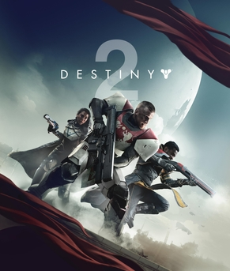

When Destiny 1 launched in 2014, it carved out a bold new direction in online shooters, blending MMO elements with tight FPS gameplay. Despite a rocky start and criticism for its fragmented story, the game found its footing through expansions like The Taken King and Rise of Iron, which significantly refined the experience. By 2017, Destiny 1 had built a loyal and passionate player base. But then came Destiny 2. When Destiny 2 released in September 2017, expectations were high. Bungie promised a fresh start, improved systems, and a more compelling narrative. What players received, however, felt like a streamlined but stripped down version of what Destiny 1 had become. Many of the gameplay systems that had been carefully evolved over three years like weapon random rolls, in depth subclass customization, and intricate raid mechanics were either removed or oversimplified in Destiny 2s launch version. For many long time fans, it felt like a betrayal of what had been built.  Player Count Year Rating 1.5 Million 2016 9.0 1.0 Million 2017 8.7 0.95 Million 2018 7.5 A Revolutionary Game Author: Tarik Campara, Published JUNE 10 2025 Baldurs Gate 3 has significantly reshaped the gaming industry by setting a new benchmark for narrative depth, player agency, and quality in role-playing games. Developed by Larian Studios, the game redefined expectations with its intricate storytelling, rich character development, and true-to-form Dungeons & Dragons mechanics. What sets it apart is the unprecedented level of choice it offers—players can approach situations in countless ways, and every decision has meaningful consequences. This level of interactivity reminded the industry that single-player, story driven games still hold immense value. In an era dominated by live service titles and microtransactions, Baldurs Gate 3 proved that a complete, premium experience can thrive. Its critical and commercial success challenged the belief that only massive studios with enormous budgets can create genre defining games. It also sparked renewed interest in turn-based combat and classic CRPG elements, encouraging other developers to take creative risks. Moreover, its early access model was executed with transparency and care, setting a positive example for community driven development. Overall, Baldurs Gate 3 didnt just revive a beloved franchise it helped realign the industrys focus on quality storytelling, player freedom, and respect for its audience. Player Count Year Rating 3 Million 2023 9.5 4 Million 2024 9.65 5 Million 2025 9.78 Sign up for my newsletter!: Sign Up!
Baldurs Gate 3 has significantly reshaped the gaming industry by setting a new benchmark for narrative depth, player agency, and quality in role-playing games. Developed by Larian Studios, the game redefined expectations with its intricate storytelling, rich character development, and true-to-form Dungeons & Dragons mechanics. What sets it apart is the unprecedented level of choice it offers—players can approach situations in countless ways, and every decision has meaningful consequences. This level of interactivity reminded the industry that single-player, story driven games still hold immense value. In an era dominated by live service titles and microtransactions, Baldurs Gate 3 proved that a complete, premium experience can thrive. Its critical and commercial success challenged the belief that only massive studios with enormous budgets can create genre defining games. It also sparked renewed interest in turn-based combat and classic CRPG elements, encouraging other developers to take creative risks. Moreover, its early access model was executed with transparency and care, setting a positive example for community driven development. Overall, Baldurs Gate 3 didnt just revive a beloved franchise it helped realign the industrys focus on quality storytelling, player freedom, and respect for its audience. Player Count Year Rating 3 Million 2023 9.5 4 Million 2024 9.65 5 Million 2025 9.78 Sign up for my newsletter!: Sign Up!